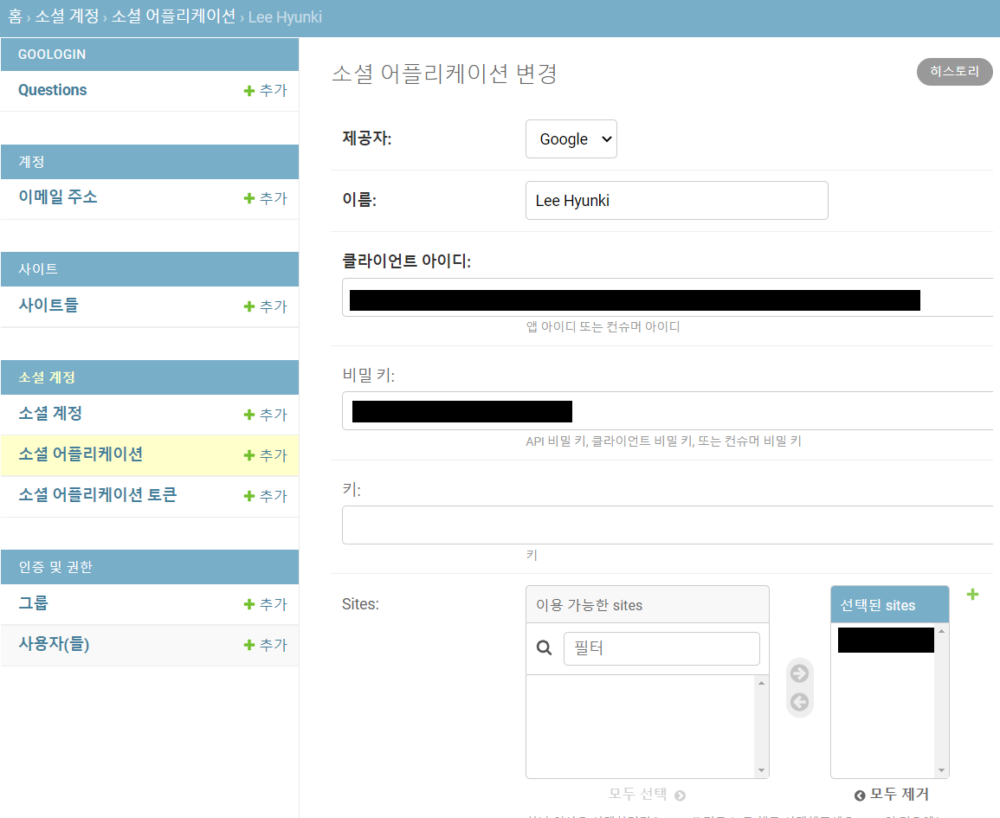

git pull https://github.com/zarathucorp/google_login목표
- Django allauth와 google OAuth를 이용해 zarathu 앱에 구글 로그인을 구현합니다.
- Django admin 페이지에서 회원별 접근 권한을 관리합니다.
요약
- 구글 로그인 구현에 필요한 Django allauth 패키지를 설치합니다.
- 구글 클라이언트를 발급하여 장고 사이트에 연결합니다.
- 장고 admin을 이용하여 접근 권한을 관리합니다.
- 참고 사항: 포트 포워딩 및 shinyproxy 배포
코드 실행
- git pull
install python, pip, Django, Django allauth, markdown
add your IP to ALLOWED_HOST
make directory for logs
mkdir logs - touch mysite.log in logs
logger.debug()
logger.info()
logger.warning()
logger.error()
logger.critical()
import logging
logging.info(query_set.query)- run
python3 manage.py makemigrations --settings=config.settings.prod
python3 manage.py migrate --settings=config.settings.prod
python3 manage.py runserver --settings=config.settings.prod 본문
allauth 설치
python Django에서는 쉽게 사용할 수 있는 로그인 모듈을 제공합니다. 로그인 모듈 사용을 위해 Django allauth를 설치합니다.
pip install Django
pip install django-allauth Django allauth 사용을 위해서 settings.py에 다음과 같이 추가합니다.


구글 클라이언트 발급
Google cloud platform (https://console.cloud.google.com)에서 웹 애플리케이션의 클라이언트를 발급합니다.
자세한 방법은 https://cloud.google.com/endpoints/docs/frameworks/java/creating-client-ids?hl=ko#web-client 를 참고하여 주시기 바랍니다.
클라이언트를 발급하면 클라이언트 ID와 보안 비밀번호를 얻게 되는데,
이 ID와 비밀번호를 장고 admin 페이지의 소셜 어플리케이션 탭에 입력합니다.
장고 admin 페이지는 장고 사이트 주소 뒤에 /admin 을 입력하여 접근할 수 있습니다.

이제 장고 사이트에서 구글 로그인 링크를 누르면 400 오류:redirect_uri_mismatch 메시지가 뜹니다.
Google cloud platform의 웹 애플리케이션 클라이언트에서 ’승인된 리디렉션 URI’에 https://domain.name/accounts/google/login/callback/ 을 입력해 주면 오류를 해결할 수 있습니다.

리디렉션 uri에는 반드시 도메인 네임을 포함하여야 합니다. IP주소만으로는 실행할 수 없습니다.
접근 권한 관리
장고로 배포한 페이지에서 shinyproxy로 shiny app을 배포한 주소로 링크를 연결할 것입니다.
저희의 목표는 회원분들 개인마다 접근할 수 있는 앱을 지정해 주는 것입니다.
이는 장고 admin 페이지와 html 파일에서 쉽게 구현할 수 있습니다.
먼저, 장고 admin에서 다음과 같이 개인 사용자에게 그룹을 지정해줍니다.

그리고 다음과 같이 링크를 연결할 페이지에서 해당 유저가 링크를 보기 위한 그룹에 속해있는지 확인하는 코드를 입력합니다.
제 코드에서는 main.html에 입력하였습니다.
main.html 파일의 if 다음의 class가 해당 그룹에 속한 유저들에게만 노출됩니다.
{% if request.user | has_group:"<group>" %}
has_group 함수의 내용은 다음과 같습니다.

has_group 함수는 제 코드에서는 goologin/templatetags/user_tags에 정의되어 있고 main.html에 다음 코드를 입력하여 불러옵니다.
{% load user_tags %} 참고사항
포트 포워딩
장고의 기본 포트가 8000이기 때문에 브라우저 도메인 뒤에 8000포트가 붙게 됩니다.
다양한 해결 방법이 있지만, 여기서는 프로그램 iptables를 이용하여 포트 포워딩을 수행하는 방법을 소개합니다.
다음 명령어를 이용하면 80포트로 들어온 신호를 8000포트로 리다이렉트할 수 있습니다.
iptables -t nat -A PREROUTING -p tcp --dport 80 -j REDIRECT --to-port 8000 shinyproxy 배포
장고 사이트에서 링크로 연결할 샤이니 앱을 배포하기 위해 shinyproxy를 이용합니다.
먼저, rstudio server에서 도커 컨테이너를 빌드합니다.
sudo docker build -t <container image>application.yml 파일의 specs: 에 컨테이너 이미지를 입력하고 shinyproxy를 구동합니다.
java -jar shinyproxy-2.5.0.jarapplication.yml 파일에서 port, authentication, template-path, landing-page를 건드리면 배포할 포트를 결정하거나, 사용자 인증을 만들거나, 템플릿으로 이용할 html 파일을 지정하거나, 기본 페이지를 설정할 수 있습니다.
shinyproxy에 관한 자세한 내용은 https://shinyproxy.io 를 참고하여 주시기 바랍니다.
결론
구글 로그인을 구현하고, 사용자 별 접근 권한을 설정하는 방법에 대해 알아보았습니다.
구현 방법이 어렵지 않고, 파이썬을 이용하기 때문에 검색을 통해 얻을 수 있는 정보가 많아 운영도 편리할 것으로 기대됩니다.
Citation
BibTeX citation:
@online{hyunki2021,
author = {Lee Hyunki},
title = {Google {Login}},
date = {2021-09-11},
url = {https://blog.zarathu.com/posts/2021-09-11-googlelogin},
langid = {en}
}
For attribution, please cite this work as:
Lee Hyunki. 2021. “Google Login.” September 11, 2021. https://blog.zarathu.com/posts/2021-09-11-googlelogin.